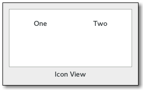

Gtk.IconView¶
Example¶

- Subclasses:
None
Methods¶
- Inherited:
Gtk.Container (35), Gtk.Widget (278), GObject.Object (37), Gtk.Buildable (10), Gtk.CellLayout (9), Gtk.Scrollable (9)
- Structs:
Gtk.ContainerClass (5), Gtk.WidgetClass (12), GObject.ObjectClass (5)
Virtual Methods¶
- Inherited:
Gtk.Container (10), Gtk.Widget (82), GObject.Object (7), Gtk.Buildable (10), Gtk.CellLayout (9), Gtk.Scrollable (1)
|
|
|
|
Properties¶
- Inherited:
Name |
Type |
Flags |
Short Description |
|---|---|---|---|
r/w/en |
Activate row on a single click |
||
r/w/co |
The |
||
r/w/en |
Space which is inserted between grid columns |
||
r/w/en |
Number of columns to display |
||
r/w/en |
How the text and icon of each item are positioned relative to each other |
||
r/w/en |
Padding around icon view items |
||
r/w/en |
The width used for each item |
||
r/w/en |
Model column used to retrieve the text if using Pango markup |
||
r/w |
The model for the icon view |
||
r/w/en |
Model column used to retrieve the icon pixbuf from |
||
r/w/en |
View is reorderable |
||
r/w/en |
Space which is inserted between grid rows |
||
r/w/en |
The selection mode |
||
r/w/en |
Space which is inserted between cells of an item |
||
r/w/en |
Model column used to retrieve the text from |
||
r/w/en |
The column in the model containing the tooltip texts for the items |
Style Properties¶
- Inherited:
Name |
Type |
Default |
Flags |
Short Description |
|---|---|---|---|---|
|
|
d/r |
Opacity of the selection box |
|
|
d/r |
Color of the selection box |
Signals¶
- Inherited:
Name |
Short Description |
|---|---|
A |
|
The |
|
The |
|
A |
|
A |
|
The |
|
A |
|
A |
Fields¶
- Inherited:
Name |
Type |
Access |
Description |
|---|---|---|---|
parent |
r |
Class Details¶
- class Gtk.IconView(*args, **kwargs)¶
- Bases:
- Abstract:
No
- Structure:
Gtk.IconViewprovides an alternative view on aGtk.TreeModel. It displays the model as a grid of icons with labels. LikeGtk.TreeView, it allows to select one or multiple items (depending on the selection mode, seeGtk.IconView.set_selection_mode()). In addition to selection with the arrow keys,Gtk.IconViewsupports rubberband selection, which is controlled by dragging the pointer.Note that if the tree model is backed by an actual tree store (as opposed to a flat list where the mapping to icons is obvious),
Gtk.IconViewwill only display the first level of the tree and ignore the tree’s branches.- CSS nodes
iconview.view ╰── [rubberband]
Gtk.IconViewhas a single CSS node with name iconview and style class .view. For rubberband selection, a subnode with name rubberband is used.- classmethod new()[source]¶
- Returns:
A newly created
Gtk.IconViewwidget- Return type:
Creates a new
Gtk.IconViewwidgetAdded in version 2.6.
- classmethod new_with_area(area)[source]¶
- Parameters:
area (
Gtk.CellArea) – theGtk.CellAreato use to layout cells- Returns:
A newly created
Gtk.IconViewwidget- Return type:
Creates a new
Gtk.IconViewwidget using the specified area to layout cells inside the icons.Added in version 3.0.
- classmethod new_with_model(model)[source]¶
- Parameters:
model (
Gtk.TreeModel) – The model.- Returns:
A newly created
Gtk.IconViewwidget.- Return type:
Creates a new
Gtk.IconViewwidget with the model model.Added in version 2.6.
- convert_widget_to_bin_window_coords(wx, wy)[source]¶
- Parameters:
- Returns:
- bx:
return location for bin_window X coordinate
- by:
return location for bin_window Y coordinate
- Return type:
Converts widget coordinates to coordinates for the bin_window, as expected by e.g.
Gtk.IconView.get_path_at_pos().Added in version 2.12.
- create_drag_icon(path)[source]¶
- Parameters:
path (
Gtk.TreePath) – aGtk.TreePathin self- Returns:
a newly-allocated surface of the drag icon.
- Return type:
Creates a
cairo.Surfacerepresentation of the item at path. This image is used for a drag icon.Added in version 2.8.
- enable_model_drag_dest(targets, actions)[source]¶
- Parameters:
targets ([
Gtk.TargetEntry]) – the table of targets that the drag will supportactions (
Gdk.DragAction) – the bitmask of possible actions for a drag to this widget
Turns self into a drop destination for automatic DND. Calling this method sets
Gtk.IconView:reorderabletoFalse.Added in version 2.8.
- enable_model_drag_source(start_button_mask, targets, actions)[source]¶
- Parameters:
start_button_mask (
Gdk.ModifierType) – Mask of allowed buttons to start dragtargets ([
Gtk.TargetEntry]) – the table of targets that the drag will supportactions (
Gdk.DragAction) – the bitmask of possible actions for a drag from this widget
Turns self into a drag source for automatic DND. Calling this method sets
Gtk.IconView:reorderabletoFalse.Added in version 2.8.
- get_activate_on_single_click()[source]¶
-
Gets the setting set by
Gtk.IconView.set_activate_on_single_click().Added in version 3.8.
- get_cell_rect(path, cell)[source]¶
- Parameters:
path (
Gtk.TreePath) – aGtk.TreePathcell (
Gtk.CellRendererorNone) – aGtk.CellRendererorNone
- Returns:
Falseif there is no such item,Trueotherwise- rect:
rectangle to fill with cell rect
- Return type:
(
bool, rect:Gdk.Rectangle)
Fills the bounding rectangle in widget coordinates for the cell specified by path and cell. If cell is
Nonethe main cell area is used.This function is only valid if self is realized.
Added in version 3.6.
- get_column_spacing()[source]¶
- Returns:
the space between columns
- Return type:
Returns the value of the
::column-spacingproperty.Added in version 2.6.
- get_columns()[source]¶
- Returns:
the number of columns, or -1
- Return type:
Returns the value of the
::columnsproperty.Added in version 2.6.
- get_cursor()[source]¶
- Returns:
Trueif the cursor is set.- Return type:
(
bool, path:Gtk.TreePath, cell:Gtk.CellRenderer)
Fills in path and cell with the current cursor path and cell. If the cursor isn’t currently set, then path will be
None. If no cell currently has focus, then cell will beNone.The returned
Gtk.TreePathmust be freed withGtk.TreePath.free().Added in version 2.8.
- get_dest_item_at_pos(drag_x, drag_y)[source]¶
- Parameters:
- Returns:
If there is no item at the given position return
Noneotherwise a tuple containing:- path:
The path of the item
- pos:
The drop position
- Return type:
(path:
Gtk.TreePath, pos:Gtk.IconViewDropPosition) orNone
Determines the destination item for a given position.
Added in version 2.8.
- get_drag_dest_item()[source]¶
- Returns:
- Return type:
(path:
Gtk.TreePath, pos:Gtk.IconViewDropPosition)
Gets information about the item that is highlighted for feedback.
Added in version 2.8.
- get_item_at_pos(x, y)[source]¶
- Parameters:
- Returns:
If not item exists at the specified position returns
None, otherwise a tuple containing:- path:
The path
- cell:
The renderer responsible for the cell at (x, y)
- Return type:
(path:
Gtk.TreePath, cell:Gtk.CellRenderer) orNone
Finds the path at the point (x, y), relative to bin_window coordinates. In contrast to
Gtk.IconView.get_path_at_pos(), this function also obtains the cell at the specified position. The returned path should be freed withGtk.TreePath.free(). SeeGtk.IconView.convert_widget_to_bin_window_coords() for converting widget coordinates to bin_window coordinates.Added in version 2.8.
- get_item_column(path)[source]¶
- Parameters:
path (
Gtk.TreePath) – theGtk.TreePathof the item- Returns:
The column in which the item is displayed
- Return type:
Gets the column in which the item path is currently displayed. Column numbers start at 0.
Added in version 2.22.
- get_item_orientation()[source]¶
- Returns:
the relative position of texts and icons
- Return type:
Returns the value of the
::item-orientationproperty which determines whether the labels are drawn beside the icons instead of below.Added in version 2.6.
- get_item_padding()[source]¶
- Returns:
the padding around items
- Return type:
Returns the value of the
::item-paddingproperty.Added in version 2.18.
- get_item_row(path)[source]¶
- Parameters:
path (
Gtk.TreePath) – theGtk.TreePathof the item- Returns:
The row in which the item is displayed
- Return type:
Gets the row in which the item path is currently displayed. Row numbers start at 0.
Added in version 2.22.
- get_item_width()[source]¶
- Returns:
the width of a single item, or -1
- Return type:
Returns the value of the
::item-widthproperty.Added in version 2.6.
- get_margin()[source]¶
- Returns:
the space at the borders
- Return type:
Returns the value of the
::marginproperty.Added in version 2.6.
- get_markup_column()[source]¶
- Returns:
the markup column, or -1 if it’s unset.
- Return type:
Returns the column with markup text for self.
Added in version 2.6.
- get_model()[source]¶
- Returns:
A
Gtk.TreeModel, orNoneif none is currently being used.- Return type:
Returns the model the
Gtk.IconViewis based on. ReturnsNoneif the model is unset.Added in version 2.6.
- get_path_at_pos(x, y)[source]¶
- Parameters:
- Returns:
The
Gtk.TreePathcorresponding to the icon orNoneif no icon exists at that position.- Return type:
Gtk.TreePathorNone
Finds the path at the point (x, y), relative to bin_window coordinates. See
Gtk.IconView.get_item_at_pos(), if you are also interested in the cell at the specified position. SeeGtk.IconView.convert_widget_to_bin_window_coords() for converting widget coordinates to bin_window coordinates.Added in version 2.6.
- get_pixbuf_column()[source]¶
- Returns:
the pixbuf column, or -1 if it’s unset.
- Return type:
Returns the column with pixbufs for self.
Added in version 2.6.
- get_reorderable()[source]¶
-
Retrieves whether the user can reorder the list via drag-and-drop. See
Gtk.IconView.set_reorderable().Added in version 2.8.
- get_row_spacing()[source]¶
- Returns:
the space between rows
- Return type:
Returns the value of the
::row-spacingproperty.Added in version 2.6.
- get_selected_items()[source]¶
- Returns:
A
GLib.Listcontaining aGtk.TreePathfor each selected row.- Return type:
Creates a list of paths of all selected items. Additionally, if you are planning on modifying the model after calling this function, you may want to convert the returned list into a list of
Gtk.TreeRowReferences. To do this, you can useGtk.TreeRowReference.new().To free the return value, use:
g_list_free_full (list, (GDestroyNotify) gtk_tree_path_free);Added in version 2.6.
- get_selection_mode()[source]¶
- Returns:
the current selection mode
- Return type:
Gets the selection mode of the self.
Added in version 2.6.
- get_spacing()[source]¶
- Returns:
the space between cells
- Return type:
Returns the value of the
::spacingproperty.Added in version 2.6.
- get_text_column()[source]¶
- Returns:
the text column, or -1 if it’s unset.
- Return type:
Returns the column with text for self.
Added in version 2.6.
- get_tooltip_column()[source]¶
- Returns:
the index of the tooltip column that is currently being used, or -1 if this is disabled.
- Return type:
Returns the column of self’s model which is being used for displaying tooltips on self’s rows.
Added in version 2.12.
- get_tooltip_context(x, y, keyboard_tip)[source]¶
- Parameters:
- Returns:
whether or not the given tooltip context points to a item
- x:
the x coordinate (relative to widget coordinates)
- y:
the y coordinate (relative to widget coordinates)
- model:
a pointer to receive a
Gtk.TreeModelorNone- path:
a pointer to receive a
Gtk.TreePathorNone- iter:
a pointer to receive a
Gtk.TreeIterorNone
- Return type:
(
bool, x:int, y:int, model:Gtk.TreeModel, path:Gtk.TreePath, iter:Gtk.TreeIter)
This function is supposed to be used in a
Gtk.Widget::query-tooltipsignal handler forGtk.IconView. The x, y and keyboard_tip values which are received in the signal handler, should be passed to this function without modification.The return value indicates whether there is an icon view item at the given coordinates (
True) or not (False) for mouse tooltips. For keyboard tooltips the item returned will be the cursor item. WhenTrue, then any of model, path and iter which have been provided will be set to point to that row and the corresponding model. x and y will always be converted to be relative to self’s bin_window if keyboard_tooltip isFalse.Added in version 2.12.
- get_visible_range()[source]¶
- Returns:
Returns
Noneif there is no visible range or a tuple containing:- start_path:
Start of region
- end_path:
End of region
- Return type:
(start_path:
Gtk.TreePath, end_path:Gtk.TreePath) orNone
Sets start_path and end_path to be the first and last visible path. Note that there may be invisible paths in between.
Both paths should be freed with
Gtk.TreePath.free() after use.Added in version 2.8.
- item_activated(path)[source]¶
- Parameters:
path (
Gtk.TreePath) – TheGtk.TreePathto be activated
Activates the item determined by path.
Added in version 2.6.
- path_is_selected(path)[source]¶
- Parameters:
path (
Gtk.TreePath) – AGtk.TreePathto check selection on.- Returns:
Trueif path is selected.- Return type:
Returns
Trueif the icon pointed to by path is currently selected. If path does not point to a valid location,Falseis returned.Added in version 2.6.
- scroll_to_path(path, use_align, row_align, col_align)[source]¶
- Parameters:
path (
Gtk.TreePath) – The path of the item to move to.use_align (
bool) – whether to use alignment arguments, orFalse.row_align (
float) – The vertical alignment of the item specified by path.col_align (
float) – The horizontal alignment of the item specified by path.
Moves the alignments of self to the position specified by path. row_align determines where the row is placed, and col_align determines where column is placed. Both are expected to be between 0.0 and 1.0. 0.0 means left/top alignment, 1.0 means right/bottom alignment, 0.5 means center.
If use_align is
False, then the alignment arguments are ignored, and the tree does the minimum amount of work to scroll the item onto the screen. This means that the item will be scrolled to the edge closest to its current position. If the item is currently visible on the screen, nothing is done.This function only works if the model is set, and path is a valid row on the model. If the model changes before the self is realized, the centered path will be modified to reflect this change.
Added in version 2.8.
- select_all()[source]¶
Selects all the icons. self must has its selection mode set to
Gtk.SelectionMode.MULTIPLE.Added in version 2.6.
- select_path(path)[source]¶
- Parameters:
path (
Gtk.TreePath) – TheGtk.TreePathto be selected.
Selects the row at path.
Added in version 2.6.
- selected_foreach(func, *data)[source]¶
- Parameters:
func (
Gtk.IconViewForeachFunc) – The function to call for each selected icon.
Calls a function for each selected icon. Note that the model or selection cannot be modified from within this function.
Added in version 2.6.
- set_activate_on_single_click(single)[source]¶
-
Causes the
Gtk.IconView::item-activatedsignal to be emitted on a single click instead of a double click.Added in version 3.8.
- set_column_spacing(column_spacing)[source]¶
- Parameters:
column_spacing (
int) – the column spacing
Sets the
::column-spacingproperty which specifies the space which is inserted between the columns of the icon view.Added in version 2.6.
- set_columns(columns)[source]¶
- Parameters:
columns (
int) – the number of columns
Sets the
::columnsproperty which determines in how many columns the icons are arranged. If columns is -1, the number of columns will be chosen automatically to fill the available area.Added in version 2.6.
- set_cursor(path, cell, start_editing)[source]¶
- Parameters:
path (
Gtk.TreePath) – AGtk.TreePathcell (
Gtk.CellRendererorNone) – One of the cell renderers of self, orNonestart_editing (
bool) –Trueif the specified cell should start being edited.
Sets the current keyboard focus to be at path, and selects it. This is useful when you want to focus the user’s attention on a particular item. If cell is not
None, then focus is given to the cell specified by it. Additionally, if start_editing isTrue, then editing should be started in the specified cell.This function is often followed by
gtk_widget_grab_focus (icon_view)in order to give keyboard focus to the widget. Please note that editing can only happen when the widget is realized.Added in version 2.8.
- set_drag_dest_item(path, pos)[source]¶
- Parameters:
path (
Gtk.TreePathorNone) – The path of the item to highlight, orNone.pos (
Gtk.IconViewDropPosition) – Specifies where to drop, relative to the item
Sets the item that is highlighted for feedback.
Added in version 2.8.
- set_item_orientation(orientation)[source]¶
- Parameters:
orientation (
Gtk.Orientation) – the relative position of texts and icons
Sets the
::item-orientationproperty which determines whether the labels are drawn beside the icons instead of below.Added in version 2.6.
- set_item_padding(item_padding)[source]¶
- Parameters:
item_padding (
int) – the item padding
Sets the
Gtk.IconView:item-paddingproperty which specifies the padding around each of the icon view’s items.Added in version 2.18.
- set_item_width(item_width)[source]¶
- Parameters:
item_width (
int) – the width for each item
Sets the
::item-widthproperty which specifies the width to use for each item. If it is set to -1, the icon view will automatically determine a suitable item size.Added in version 2.6.
- set_margin(margin)[source]¶
- Parameters:
margin (
int) – the margin
Sets the
::marginproperty which specifies the space which is inserted at the top, bottom, left and right of the icon view.Added in version 2.6.
- set_markup_column(column)[source]¶
- Parameters:
column (
int) – A column in the currently used model, or -1 to display no text
Sets the column with markup information for self to be column. The markup column must be of type
GObject.TYPE_STRING. If the markup column is set to something, it overrides the text column set byGtk.IconView.set_text_column().Added in version 2.6.
- set_model(model)[source]¶
- Parameters:
model (
Gtk.TreeModelorNone) – The model.
Sets the model for a
Gtk.IconView. If the self already has a model set, it will remove it before setting the new model. If model isNone, then it will unset the old model.Added in version 2.6.
- set_pixbuf_column(column)[source]¶
- Parameters:
column (
int) – A column in the currently used model, or -1 to disable
Sets the column with pixbufs for self to be column. The pixbuf column must be of type #GDK_TYPE_PIXBUF
Added in version 2.6.
- set_reorderable(reorderable)[source]¶
-
This function is a convenience function to allow you to reorder models that support the
Gtk.TreeDragSourceIfaceand theGtk.TreeDragDestIface. BothGtk.TreeStoreandGtk.ListStoresupport these. If reorderable isTrue, then the user can reorder the model by dragging and dropping rows. The developer can listen to these changes by connecting to the model’s row_inserted and row_deleted signals. The reordering is implemented by setting up the icon view as a drag source and destination. Therefore, drag and drop can not be used in a reorderable view for any other purpose.This function does not give you any degree of control over the order – any reordering is allowed. If more control is needed, you should probably handle drag and drop manually.
Added in version 2.8.
- set_row_spacing(row_spacing)[source]¶
- Parameters:
row_spacing (
int) – the row spacing
Sets the
::row-spacingproperty which specifies the space which is inserted between the rows of the icon view.Added in version 2.6.
- set_selection_mode(mode)[source]¶
- Parameters:
mode (
Gtk.SelectionMode) – The selection mode
Sets the selection mode of the self.
Added in version 2.6.
- set_spacing(spacing)[source]¶
- Parameters:
spacing (
int) – the spacing
Sets the
::spacingproperty which specifies the space which is inserted between the cells (i.e. the icon and the text) of an item.Added in version 2.6.
- set_text_column(column)[source]¶
- Parameters:
column (
int) – A column in the currently used model, or -1 to display no text
Sets the column with text for self to be column. The text column must be of type
GObject.TYPE_STRING.Added in version 2.6.
- set_tooltip_cell(tooltip, path, cell)[source]¶
- Parameters:
tooltip (
Gtk.Tooltip) – aGtk.Tooltippath (
Gtk.TreePath) – aGtk.TreePathcell (
Gtk.CellRendererorNone) – aGtk.CellRendererorNone
Sets the tip area of tooltip to the area which cell occupies in the item pointed to by path. See also
Gtk.Tooltip.set_tip_area().See also
Gtk.IconView.set_tooltip_column() for a simpler alternative.Added in version 2.12.
- set_tooltip_column(column)[source]¶
- Parameters:
column (
int) – an integer, which is a valid column number for self’s model
If you only plan to have simple (text-only) tooltips on full items, you can use this function to have
Gtk.IconViewhandle these automatically for you. column should be set to the column in self’s model containing the tooltip texts, or -1 to disable this feature.When enabled,
Gtk.Widget:has-tooltipwill be set toTrueand self will connect aGtk.Widget::query-tooltipsignal handler.Note that the signal handler sets the text with
Gtk.Tooltip.set_markup(), so &, <, etc have to be escaped in the text.Added in version 2.12.
- set_tooltip_item(tooltip, path)[source]¶
- Parameters:
tooltip (
Gtk.Tooltip) – aGtk.Tooltippath (
Gtk.TreePath) – aGtk.TreePath
Sets the tip area of tooltip to be the area covered by the item at path. See also
Gtk.IconView.set_tooltip_column() for a simpler alternative. See alsoGtk.Tooltip.set_tip_area().Added in version 2.12.
- unselect_path(path)[source]¶
- Parameters:
path (
Gtk.TreePath) – TheGtk.TreePathto be unselected.
Unselects the row at path.
Added in version 2.6.
- unset_model_drag_dest()[source]¶
Undoes the effect of
Gtk.IconView.enable_model_drag_dest(). Calling this method setsGtk.IconView:reorderabletoFalse.Added in version 2.8.
- unset_model_drag_source()[source]¶
Undoes the effect of
Gtk.IconView.enable_model_drag_source(). Calling this method setsGtk.IconView:reorderabletoFalse.Added in version 2.8.
- do_item_activated(path) virtual¶
- Parameters:
path (
Gtk.TreePath) – TheGtk.TreePathto be activated
Activates the item determined by path.
Added in version 2.6.
- do_move_cursor(step, count) virtual¶
- Parameters:
step (
Gtk.MovementStep)count (
int)
- Return type:
- do_select_all() virtual¶
Selects all the icons. icon_view must has its selection mode set to
Gtk.SelectionMode.MULTIPLE.Added in version 2.6.
- do_select_cursor_item() virtual¶
- do_selection_changed() virtual¶
- do_toggle_cursor_item() virtual¶
- do_unselect_all() virtual¶
Unselects all the icons.
Added in version 2.6.
Signal Details¶
- Gtk.IconView.signals.activate_cursor_item(icon_view)¶
- Signal Name:
activate-cursor-item- Flags:
- Parameters:
icon_view (
Gtk.IconView) – The object which received the signal- Return type:
A
keybinding signalwhich gets emitted when the user activates the currently focused item.Applications should not connect to it, but may emit it with g_signal_emit_by_name() if they need to control activation programmatically.
The default bindings for this signal are Space, Return and Enter.
- Gtk.IconView.signals.item_activated(icon_view, path)¶
- Signal Name:
item-activated- Flags:
- Parameters:
icon_view (
Gtk.IconView) – The object which received the signalpath (
Gtk.TreePath) – theGtk.TreePathfor the activated item
The
::item-activatedsignal is emitted when the methodGtk.IconView.item_activated() is called, when the user double clicks an item with the “activate-on-single-click” property set toFalse, or when the user single clicks an item when the “activate-on-single-click” property set toTrue. It is also emitted when a non-editable item is selected and one of the keys: Space, Return or Enter is pressed.
- Gtk.IconView.signals.move_cursor(icon_view, step, count)¶
- Signal Name:
move-cursor- Flags:
- Parameters:
icon_view (
Gtk.IconView) – The object which received the signalstep (
Gtk.MovementStep) – the granularity of the move, as aGtk.MovementStepcount (
int) – the number of step units to move
- Return type:
The
::move-cursorsignal is akeybinding signalwhich gets emitted when the user initiates a cursor movement.Applications should not connect to it, but may emit it with g_signal_emit_by_name() if they need to control the cursor programmatically.
The default bindings for this signal include
Arrow keys which move by individual steps
Home/End keys which move to the first/last item
PageUp/PageDown which move by “pages” All of these will extend the selection when combined with the Shift modifier.
- Gtk.IconView.signals.select_all(icon_view)¶
- Signal Name:
select-all- Flags:
- Parameters:
icon_view (
Gtk.IconView) – The object which received the signal
A
keybinding signalwhich gets emitted when the user selects all items.Applications should not connect to it, but may emit it with g_signal_emit_by_name() if they need to control selection programmatically.
The default binding for this signal is Ctrl-a.
- Gtk.IconView.signals.select_cursor_item(icon_view)¶
- Signal Name:
select-cursor-item- Flags:
- Parameters:
icon_view (
Gtk.IconView) – The object which received the signal
A
keybinding signalwhich gets emitted when the user selects the item that is currently focused.Applications should not connect to it, but may emit it with g_signal_emit_by_name() if they need to control selection programmatically.
There is no default binding for this signal.
- Gtk.IconView.signals.selection_changed(icon_view)¶
- Signal Name:
selection-changed- Flags:
- Parameters:
icon_view (
Gtk.IconView) – The object which received the signal
The
::selection-changedsignal is emitted when the selection (i.e. the set of selected items) changes.
- Gtk.IconView.signals.toggle_cursor_item(icon_view)¶
- Signal Name:
toggle-cursor-item- Flags:
- Parameters:
icon_view (
Gtk.IconView) – The object which received the signal
A
keybinding signalwhich gets emitted when the user toggles whether the currently focused item is selected or not. The exact effect of this depend on the selection mode.Applications should not connect to it, but may emit it with g_signal_emit_by_name() if they need to control selection programmatically.
There is no default binding for this signal is Ctrl-Space.
- Gtk.IconView.signals.unselect_all(icon_view)¶
- Signal Name:
unselect-all- Flags:
- Parameters:
icon_view (
Gtk.IconView) – The object which received the signal
A
keybinding signalwhich gets emitted when the user unselects all items.Applications should not connect to it, but may emit it with g_signal_emit_by_name() if they need to control selection programmatically.
The default binding for this signal is Ctrl-Shift-a.
Property Details¶
- Gtk.IconView.props.activate_on_single_click¶
- Name:
activate-on-single-click- Type:
- Default Value:
- Flags:
The activate-on-single-click property specifies whether the “item-activated” signal will be emitted after a single click.
Added in version 3.8.
- Gtk.IconView.props.cell_area¶
- Name:
cell-area- Type:
- Default Value:
- Flags:
The
Gtk.CellAreaused to layout cell renderers for this view.If no area is specified when creating the icon view with
Gtk.IconView.new_with_area() aGtk.CellAreaBoxwill be used.Added in version 3.0.
- Gtk.IconView.props.column_spacing¶
- Name:
column-spacing- Type:
- Default Value:
6- Flags:
The column-spacing property specifies the space which is inserted between the columns of the icon view.
Added in version 2.6.
- Gtk.IconView.props.columns¶
- Name:
columns- Type:
- Default Value:
-1- Flags:
The columns property contains the number of the columns in which the items should be displayed. If it is -1, the number of columns will be chosen automatically to fill the available area.
Added in version 2.6.
- Gtk.IconView.props.item_orientation¶
- Name:
item-orientation- Type:
- Default Value:
- Flags:
The item-orientation property specifies how the cells (i.e. the icon and the text) of the item are positioned relative to each other.
Added in version 2.6.
- Gtk.IconView.props.item_padding¶
- Name:
item-padding- Type:
- Default Value:
6- Flags:
The item-padding property specifies the padding around each of the icon view’s item.
Added in version 2.18.
- Gtk.IconView.props.item_width¶
- Name:
item-width- Type:
- Default Value:
-1- Flags:
The item-width property specifies the width to use for each item. If it is set to -1, the icon view will automatically determine a suitable item size.
Added in version 2.6.
- Gtk.IconView.props.markup_column¶
- Name:
markup-column- Type:
- Default Value:
-1- Flags:
The
::markup-columnproperty contains the number of the model column containing markup information to be displayed. The markup column must be of typeGObject.TYPE_STRING. If this property and the:text-columnproperty are both set to column numbers, it overrides the text column. If both are set to -1, no texts are displayed.Added in version 2.6.
- Gtk.IconView.props.model¶
- Name:
model- Type:
- Default Value:
- Flags:
The model for the icon view
- Gtk.IconView.props.pixbuf_column¶
- Name:
pixbuf-column- Type:
- Default Value:
-1- Flags:
The
::pixbuf-columnproperty contains the number of the model column containing the pixbufs which are displayed. The pixbuf column must be of type #GDK_TYPE_PIXBUF. Setting this property to -1 turns off the display of pixbufs.Added in version 2.6.
- Gtk.IconView.props.reorderable¶
- Name:
reorderable- Type:
- Default Value:
- Flags:
The reorderable property specifies if the items can be reordered by DND.
Added in version 2.8.
- Gtk.IconView.props.row_spacing¶
- Name:
row-spacing- Type:
- Default Value:
6- Flags:
The row-spacing property specifies the space which is inserted between the rows of the icon view.
Added in version 2.6.
- Gtk.IconView.props.selection_mode¶
- Name:
selection-mode- Type:
- Default Value:
- Flags:
The
::selection-modeproperty specifies the selection mode of icon view. If the mode isGtk.SelectionMode.MULTIPLE, rubberband selection is enabled, for the other modes, only keyboard selection is possible.Added in version 2.6.
- Gtk.IconView.props.spacing¶
- Name:
spacing- Type:
- Default Value:
0- Flags:
The spacing property specifies the space which is inserted between the cells (i.e. the icon and the text) of an item.
Added in version 2.6.
- Gtk.IconView.props.text_column¶
- Name:
text-column- Type:
- Default Value:
-1- Flags:
The
::text-columnproperty contains the number of the model column containing the texts which are displayed. The text column must be of typeGObject.TYPE_STRING. If this property and the:markup-columnproperty are both set to -1, no texts are displayed.Added in version 2.6.
- Gtk.IconView.props.tooltip_column¶
- Name:
tooltip-column- Type:
- Default Value:
-1- Flags:
The column in the model containing the tooltip texts for the items